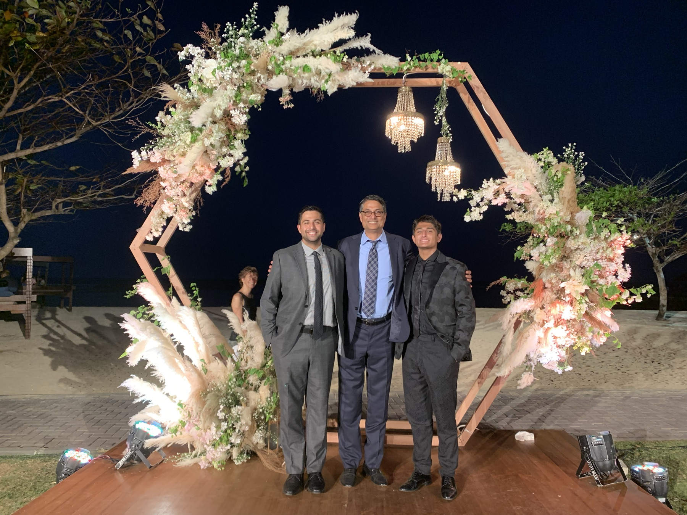
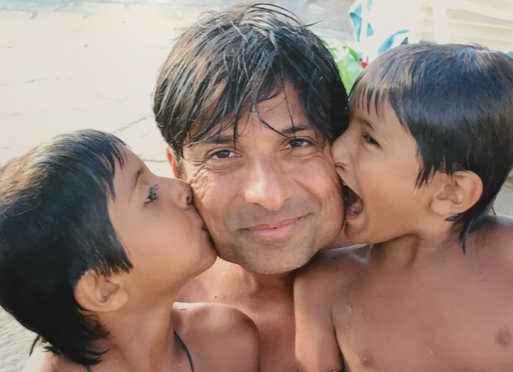
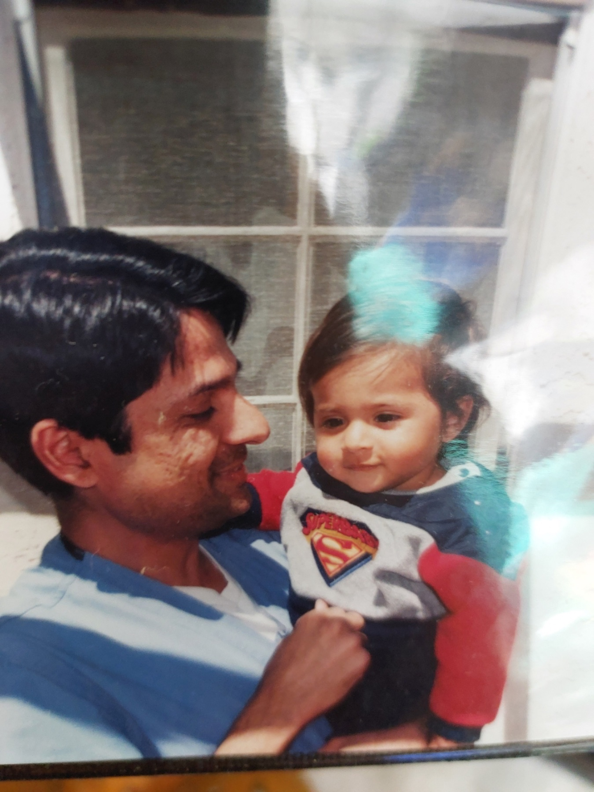
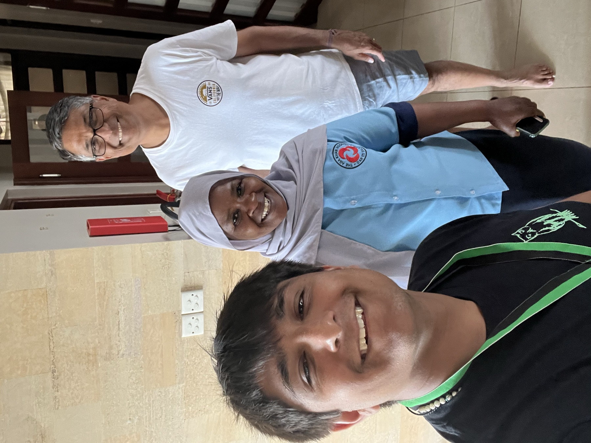
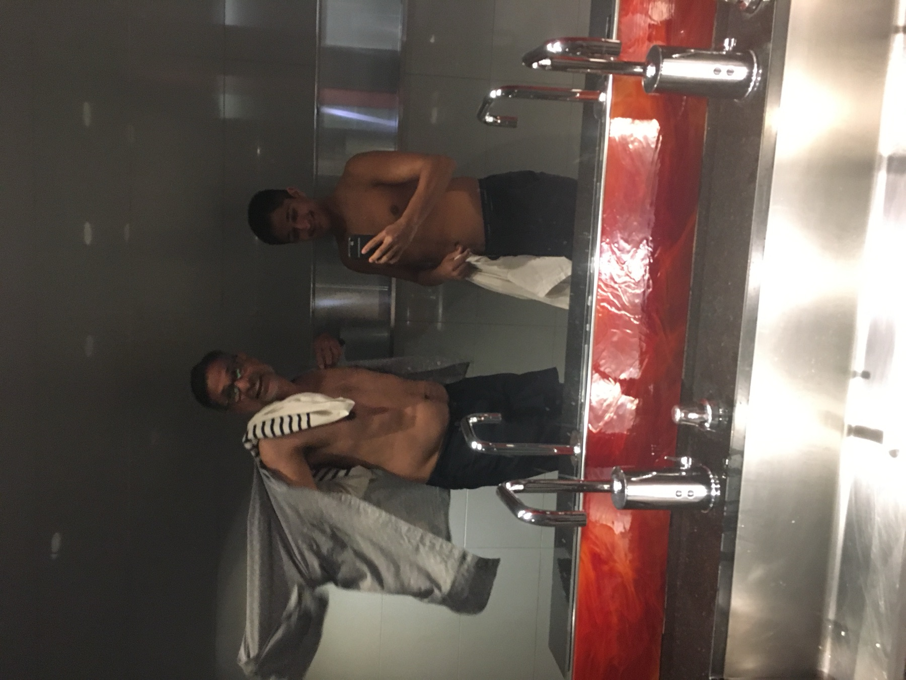
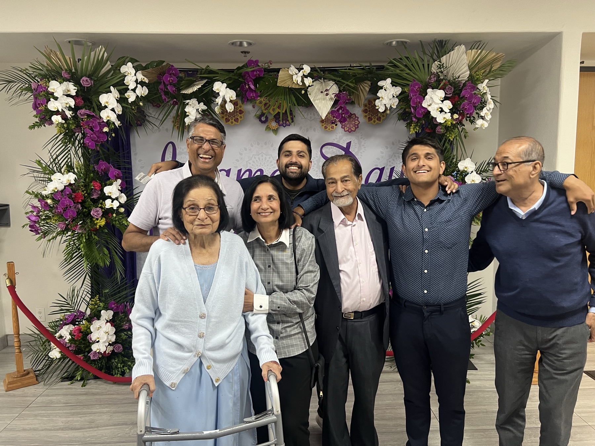
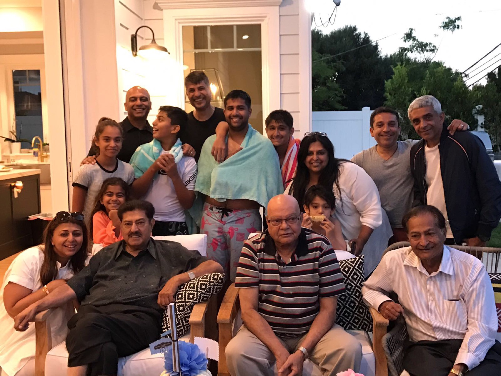

Dr. Munaf A. Shamji — cardiologist, healer, the best friend and the best man we know. He would never tell you any of this about himself. So we built him a place that does.
His story, one heartbeat at a timeMost people who do this much want you to know it. He spends his whole life making sure you don't.
This is the one place he doesn't get a say. Every photo, every story, every fact below is true — pulled from a life he's too humble to ever narrate himself. Scroll slowly. There's a lot of love in here.
Before the cath lab and the stethoscope, he was a kid from a big, loud, loving family — the son of Mumtaz and Abdulrasul Shamji, brother to Zazmina and Alta. He carried that warmth into every room he's walked into since.

Look at the photos. Same smile. Same arms-around-everyone. The man who would one day fly across the world to heal strangers started by holding his own kids like they were the only thing that mattered — because to him, they were.
He grew up understanding something most people never learn: that the point of doing well is to take care of the people you love. He's never once forgotten it.

He is the most honest person we know — honest with himself first. He's the rare adult who is still growing, still curious, still asking questions like a kid who genuinely wants to understand life. He learns from us. He says so out loud.
"I'm still learning. That's the whole point."
Pharmacy degree, magna cum laude. Medical school in Kansas. Residency and three fellowships across UCLA hospitals. Chief Cardiology Fellow. Fellow of the Year. He earned all of it — and then spent the next 25 years quietly using it to keep other people's hearts beating.
"It doesn't matter how well you do it. It matters that you tried." — the rule he raised us on, and the way he treats every patient.
Through the Aga Khan Health Board, he travels to Dar es Salaam and Arusha — sometimes the only cardiologist in the entire country. He has literally carried echocardiogram machines across the world in his own luggage so that people there could have a chance. He's trying to build a cath lab where there isn't one. He has never once posted about it.

He cares deeply about where he comes from, and he turns that care into action. Clinics. Screenings. Showing up where the need is greatest. He'll wear the "Aga Khan Foundation" shirt to dinner and never explain why — because to him it isn't a story, it's just what you do.
"If someone needs help, you don't ask why. You ask when."
He taught us every sport we know, and one lesson under all of them: try-hard at everything. He never cared how well we did, only that we left it all on the field. A 61-year-old man who still puts it all on the field himself, every single day.

He is the engine of our family. He goes to work, comes home exhausted, and gets right back on his computer to take care of everyone. He's tired, and he does it anyway, because that's what love looks like when nobody's watching.
He works out with his son who's chasing his own health, plays soccer and volleyball with his friends, and laughs — really laughs — the kind that fills a whole house.
The funny ones. The real ones. The reasons he's our favorite person.
Cousins, aunts, uncles, friends — the only reason this enormous family stays a family is that one man keeps building the table. He opens his home to everyone. He pays for everyone's dinner — not as a kind gesture, but as a reflex, like it was never a question.

Friends, families, kids from our community come together so the next generation can meet, laugh, and belong. He plans the whole thing. He plays soccer and volleyball at it. He makes sure every kid feels seen — because that's the world he wants them to grow up in.
We learned how to host, how to give, how to open a door, from watching him do it a thousand times without ever calling it generosity.

He laughs the hardest. He dances at the parties. He throws on a lei and a silly hat for someone's 21st. Despite carrying the whole family on his back, he chose joy, and he taught all of us to choose it too.
He is sensitive and strong — and nowhere is that clearer than in how he cares for his own mother, and how he loves his wife. He wants her to be the happiest person on earth, and he believes in her completely, in anything she needs.
You don't really know someone until you know their tiny rituals. Here are his.
The New York Times, read properly, every single morning. No phone. No rushing.
Hot chai with toast on the side. The most reliable 15 minutes of his day.
Not just any chocolate. That one. Don't try to substitute it. We've learned.
Clean, milky vanilla soft serve — the kind from Scoopy's in Dar es Salaam. Nothing fancy. Just perfect.
The best in the world, and he'll tell you so. Some things you never outgrow.
Give him a ball and some friends and he is, instantly, the happiest 20-year-old you've ever met.
This is a whole little world. Wander around.
Dad — you have spent your entire life making other people's lives bigger and never once asking for credit. You taught us humility by living it. You taught us to try by trying harder than anyone, at an age when most people stop. You taught us that family isn't something you have, it's something you build — over and over, dinner after dinner, reunion after reunion.
You fly across the world to heal people who will never know your name. You hold your mother's hand. You love Mom the way everyone hopes to be loved. You laugh the loudest and you carry the most. And you do all of it like it's nothing, like it's just Tuesday.
You are the best person we know, and easily the best friend we have. Nobody ever makes things for you, because you're too busy making everything for everyone else. So we made this. It's permanent now. It lives on the internet at your own name, where it can't be deleted, the way your fingerprints are on every one of us.
Happy Father's Day. We love you more than chai and Cadbury Whole Nut combined — and you know that's saying something.
— Zain & Reza ❤
He'd never list these. We will.
Massachusetts College of Pharmacy. Rho Chi Honor Society. The science came first.
University of Kansas School of Medicine. Chapter President of the American Medical Students Association along the way.
Helped design healthcare delivery for the poorest communities through the Aga Khan University — before he'd even finished training.
Residency at UCLA–San Fernando VA Medical Center.
UCLA–Olive View–West LA VA. Named Fellow of the Year. Nuclear licensed.
UCLA Harbor–Good Samaritan. Coronary and peripheral vascular disease — the hardest, highest-stakes hearts.
Valley Presbyterian and Encino–Tarzana Medical Centers.
Still practicing. Still the calmest hands in the room.
Project manager for the Cardiovascular Risk Project. Flying to Dar es Salaam and Arusha to be, some days, a nation's only cardiologist.